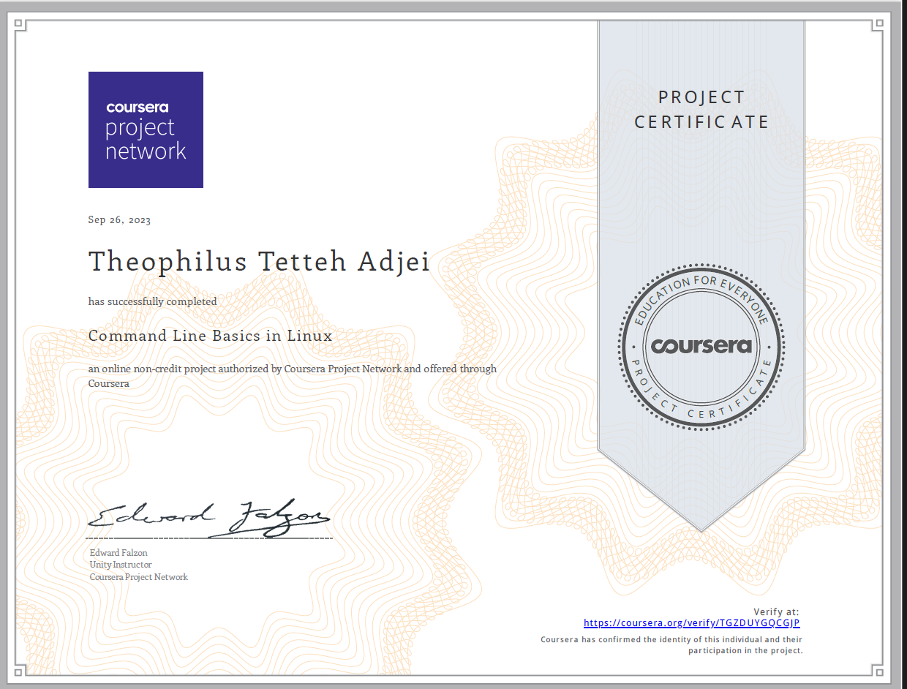
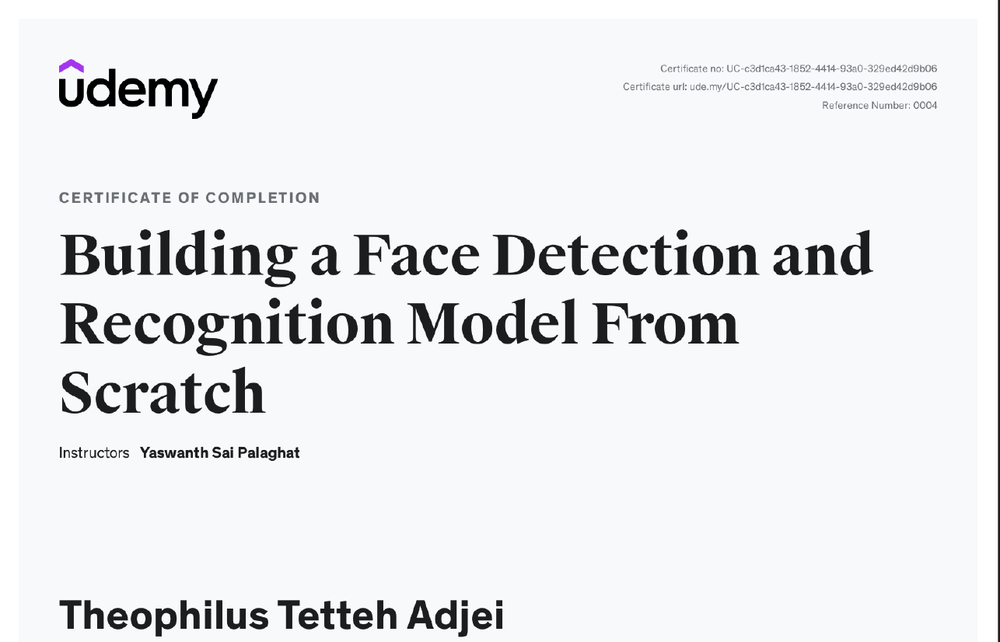
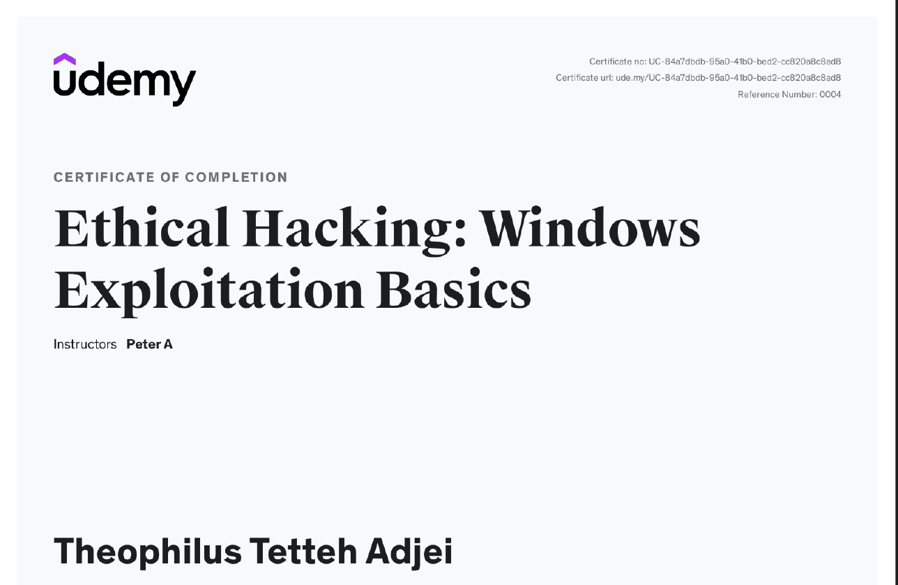

WELCOME TO MY CERTIFICATE GALLERY
Below are some of the few certificates I have acquired so far through
courses and projects
COMMAND LINE BASICS IN LINUX

FACE DETECTION AND RECOGNITION MODEL

ETHICAL HACKING: WINDOWS EXPLOITATION BASICS

TECHNICAL SUPPORT FUNDAMENTALS

SOME MORE PROJECTS IN HTML...
BIRTHDAY INVITE PROJECT
MY MOVIE RANKING PROJECT
And Many More...
Home Page